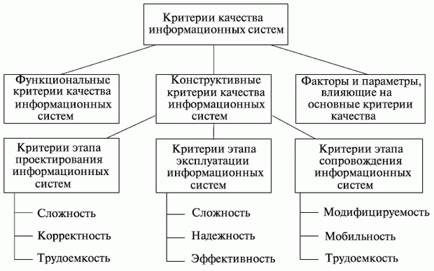

Оценка качества функционирования информационной системы. CALS-технологии
Оценка качества информационных систем
Аннотация: Показаны виды дефектов информационных систем, методы оценки их качества, рассматриваются стандарты управления качеством, приводится классификация критериев качества информационных систем.
Цель лекции заключается в изложении методики, позволяющей оценивать качество внедряемых информационных систем.
1. Общая постановка задачи
Качество ИС связано с дефектами, заложенными на этапе проектирования и проявляющимися в процессе эксплуатации. Свойства ИС, в том числе и дефектологические, могут проявляться лишь во взаимодействии с внешней средой, включающей технические средства, персонал, информационное и программное окружение.
В зависимости от целей исследования и этапов жизненного цикла ИС дефектологические свойства разделяют надефектогенность, дефектабельность и дефектоскопичность.
Дефектогенность определяется влиянием следующих факторов:
-
численностью разработчиков ИС, их профессиональными психофизиологическими характеристиками;
-
условиями и организацией процесса разработки ИС;
-
характеристиками инструментальных средств и комплексов ИС;
-
сложностью задач, решаемых ИС;
-
степенью агрессивности внешней среды (потенциальной возможностью внешней среды вносить преднамеренные дефекты, например, воздействие вирусов).
Дефектабельность характеризует наличие дефектов ИС и определяется их количеством и местонахождением. Другими факторами, влияющими на дефектабельность, являются:
-
структурно-конструктивные особенности ИС;
-
интенсивность и характеристики ошибок, приводящих к дефектам.
Дефектоскопичность характеризует возможность проявления дефектов в виде отказов и сбоев в процессе отладки, испытаний или эксплуатации. На дефектоскопичность влияют:
-
количество, типы и характер распределения дефектов;
-
устойчивость ИС к проявлению дефектов;
-
характеристики средств контроля и диагностики дефектов;
-
квалификация обслуживающего персонала.
Оценка качества ИС - задача крайне сложная из-за многообразия интересов пользователей. Поэтому невозможно предложить одну универсальную меру качества и приходится использовать ряд характеристик, охватывающих весь спектр предъявляемых требований. Наиболее близки к задачам оценки качества ИС модели качества программного обеспечения, являющегося одним из важных составных частей ИС. В настоящее время используется несколько абстрактных моделей качества программного обеспечения, основанных на определениях характеристики качества, показателя качества, критерия и метрики.
Критерийможет быть определен как независимый атрибут ИС или процесса ее создания. С помощью такого критерия может быть измерена характеристика качества ИС на основе той или иной метрики. Совокупность нескольких критериев определяетпоказатель качества ,формируемый исходя из требований, предъявляемых к ИС. В настоящее время наибольшее распространение получила иерархическая модельвзаимосвязи компонентов качества ИС. Вначале определяются характеристики качества, в числе которых могут быть, например:
-
общая полезность;
-
исходная полезность;
-
удобство эксплуатации.
Далее формируются показатели, к числу которых могут быть отнесены:
-
практичность;
-
целостность;
-
корректность;
-
удобство обслуживания;
-
оцениваемость;
-
гибкость;
-
адаптируемость;
-
мобильность;
-
возможность взаимодействия.
Каждому показателю качества ставится в соответствие группа критериев. Для указанных показателей приведем возможные критерии. Надо отметить, что один и тот же критерий может характеризовать несколько показателей:
-
практичность -работоспособность, возможность обучения, коммуникативность, объем ввода, скорость ввода-вывода;
-
целостность -регулирование доступа, контроль доступа;
-
эффективность -эффективность использования памяти, эффективность функционирования;
-
корректность -трассируемость, завершенность, согласованность;
-
надежность -точность, устойчивость к ошибкам, согласованность, простоту;
-
удобство обслуживания -согласованность, простоту, краткость, информативность, модульность;
-
оцениваемость -простоту, наличие измерительных средств, информативность, модульность;
-
гибкость -распространяемость, общность, информатирован-ность, модульность;
-
адаптируемость -общность, информативность, модульность, аппаратную независимость, программную независимость;
-
мобильность -информативность, модульность, аппаратную независимость, программную независимость;
-
возможность взаимодействия -модульность, унифицируемость процедур связи, унифицируемость данных.
С помощью метрик можно дать количественную или качественную оценку качества ИС. Различают следующие виды метрических шкал для измерения критериев.
Первый тип - метрики, которые используют интервальную шкалу, характеризуемую относительными величинами реально измеряемых физических показателей, например, временем наработки на отказ, вероятностью ошибки, объемом информации и других.
Второй тип - метрики, которым соответствует порядковая шкала, позволяющая ранжировать характеристики путем сравнения с опорными значениями.
Третий тип - метрики, которым соответствуют номинальная, или категорированная шкала, определяющая наличие рассматриваемого свойства или признака у рассматриваемого объекта без учета градаций по этому признаку. Так, например,интерфейс может быть "простым для понимания", "умеренно простым", "сложным для понимания".
Развитием иерархического подхода является представленная на рис.1 модель классификации критериев качестваинформационных систем. С помощью функциональных критериев оценивается степень выполнения ИС основных целей или задач. Конструктивные критерии предназначены для оценки компонент ИС, не зависящих от целевого назначения.
Одним из путей обеспечения качества ИС является сертификация .В США Радиотехническая комиссия по аэронавтике в своем руководящем документе определяет процесс сертификации следующим образом:

Рис. 1.Модель классификации критериев качества информационных систем
" Сертификация - процесс официально выполняемой функции системы ... путем удостоверения, что функция ... удовлетворяет требованиям заказчика, а также государственным нормативным документам".
В настоящее время не существует стандартов, полностью удовлетворяющих оценке качества ИС. В западноевропейских странах имеется ряд стандартов, определяющих основы сертификации программных систем. Стандарт Великобритании (BS750) описывает структурные построения программных систем, при соблюдении которых может быть получен документ, гарантирующий качествона государственном уровне. Имеется международный аналог указанного стандарта (ISO9000) и аналог для стран-членов НАТО (AQAP1). Существующая в нашей стране система нормативно-технических документов относит программное обеспечение к "продукции производственно-технического назначения", которая рассматривается как материальный объект. Однако программное обеспечение является скорее абстрактной нематериальной сферой. Существующие ГОСТы (например, ГОСТ 28195-89 "Оценкакачества программных средств. Общие положения") явно устарели и являются неполными.
2. Стандарты управления качеством промышленной продукции
Международные стандарты серии ISO 9000 разработаны для управления качеством продукции, их дополняют стандарты серии ISO14000, отражающие экологические требования к производству промышленной продукции. Хотя эти стандарты непосредственно не связаны с CALS- стандартами, их цели - совершенствование промышленного производства, повышение его эффективности - совпадают.
Очевидно, что управление качеством тесно связано с его контролем. Контроль качества традиционно основан на измерении показателей качества продукции на специальных технологических операциях контроля и выбраковке негодных изделий. Однако есть и другой подход к управлению качеством, который основан на контроле качественных показателей не самих изделий, апроектных процедур и технологических процессов, используемых при создании этих изделий.
Такой подход во многих случаях более эффективен. Он требует меньше затрат, поскольку позволяет обойтись без стопроцентного контроля продукции и благодаря предупреждению появления брака снижает производственные издержки. Именно этот подход положен в основу стандартов ISO 9000, принятых ISO в 1987 г. и проходящих корректировку приблизительно каждые пять лет.
Таким образом, методической основой для управления качеством являются международные стандарты серии ISO 9000. Они определяют и регламентируют инвариантные вопросы создания, развития, применения и сертификации систем качества в промышленности. В них устанавливается форма требований к системе качества в целях демонстрации поставщиком своих возможностей и оценки этих возможностей внешними сторонами.
Основной причиной появления стандартов ISO 9000 была потребность в общем для всех участников международного рынка базисе для контроля и управления качеством товаров. Американское общество контроля качества определило цели ISO 9000 как помощь в развитии международного обмена товарами и услугами и кооперации в сфере интеллектуальной, научной, технологической и деловой активности.
В стандартах ISO 9000 используется определение качества из стандарта ISO 8402: " Качество - совокупность характеристик продукта, относящихся к его способности удовлетворять установленные или предполагаемые потребности". Аналогичноеопределение содержится в ГОСТ 15467-79: " Качество продукции - это совокупность свойств продукции, обусловливающих ее пригодность удовлетворять определенные потребности в соответствии с ее назначением". В ISO 9000 вводится понятие системыкачества (QS - Quality System), под которой понимают документальную систему с руководствами и описаниями процедур достижения качества. Другими словами, система качества есть совокупность организационной структуры, ответственности, процедур, процессов и ресурсов, обеспечивающая осуществление общего руководства качеством. Система качества обычно представляет собой совокупность трех слоев документов:
-
описание политики управления для каждого системного элемента;
-
описание процедур управления качеством (что, где, кем и когда должно быть сделано);
-
тесты, планы, инструкции и т. п.
Сертификация предприятий по стандартам ISO 9001-9003 выполняется некоторой уполномоченной внешней организацией. Наличие сертификата качества - одно из важных условий для успеха коммерческой деятельности предприятий.
Вторичные стандарты включают в себя:
-
ISO 9000 - основные понятия, руководство по применению ISO 9001;
-
ISO 9004 - элементы систем управления качеством. Поддерживающие стандарты предназначены для развития и установки систем качества:
-
ISO 10011 - аудит, критерии для аудита систем качества ;
-
ISO 10012 - требования для измерительного оборудования;
-
ISO 10013 - пособие для развития руководств по управлению качеством.
Часть этих стандартов утверждена как государственные стандарты Российской Федерации. В частности, к ним относятся:
-
ГОСТ Р ИСО 9001-96 "Системы качества. Модель обеспечения качества при проектировании, разработке, производстве, монтаже и обслуживании";
-
ГОСТ Р ИСО 9002-96 "Системы качества. Модель обеспечения качества при производстве, монтаже и обслуживании";
-
ГОСТ Р ИСО 9003-96 "Системы качества. Модель обеспечения качества при окончательном контроле и испытаниях".
В настоящее время разработана новая версия стандартов серии ISO 9000 под названием ISO 9000:2000 Quality managementsystems (системы управления качеством ), в которую включены следующие документы:
-
ISO 9000:2000 Fundamentals and vocabulary (основы и терминология);
-
ISO 9001:2000 Requirements (требования);
-
ISO 9004:2000 Guidelines for performance improvement (руководство по развитию).
Главное отличие новой версии от предыдущей состоит в том, что она обусловлена стремлением упростить практическое использование стандартов, направлена на их лучшую гармонизацию и заключаются в следующем.
В стандарте ISO 9001 минимизируется объем требований к системе качества. Стандарты ISO 9002-9003 из новой версии исключаются. Расширяется круг контролируемых ресурсов, в их число включены такие элементы, как информация, коммуникации,инфраструктура.
Введенные в стандарте ISO 9004 двадцать элементов качества сворачиваются в четыре группы:
-
распределение ответственности (management responsibility);
-
управление ресурсами (resource management);
-
реализация продукции и услуг (product and/or service realization);
-
измерения и анализ (measurement, analysis, and improvement).
Сертификация предприятий по стандартам ISO 9001-9003 выполняется некоторой уполномоченной внешней организацией. Наличие сертификата качества - одно из важных условий для успеха коммерческой деятельности предприятий.
Стандарты ISO 14000 являются также системой управления влиянием на окружающую среду; они, как и ISO 9000, реализуются в процессе сертификации предприятий, задают процедуры управления и контроль документации, аудит, подразумевают соответствующее обучение и сбор статистики. Кроме требований заказчиков и покупателей, в них воплощаются внутренние требования организации.
CALS-технология(Computer aided Acquisition and Logistics Support, CALS-технология) – компьютерно-ориентированный процесс поставок (сырья и комплектующих) и поддержка логистики. Этот метод возник в 80-х годах XX в. для решения задачи повышения эффективности управления и планирования в процессе заказа, разработки, организации производства, поставок и эксплуатации военной техники.
CALS технологии
CALS - это свод методик, позволяющий найти пути поиска системного подхода к процессу вывода новой продукции на рынок - от проведения научно-исследовательских и опытно-конструкторских работ и организации производства до осуществления комплекса маркетинга, продаж и послепродажного обслуживания готовых изделий. Этот метод включает в себя положения системы качества и реализуется в форме проекта. Для наиболее эффективной реализации любого из подходов к управлению бизнес-средой следует опираться на положения системы качества. Система качества (СК) - это совокупность организационной структуры, ответственности, процедур, процессов и ресурсов, обеспечивающая осуществление общего руководства качеством.
СК - это также и средство, обеспечивающее проведение определенной политики достижения поставленных целей в области качества. Основные положения проблемы качества состоят в следующих утверждениях:
- качество ориентировано на потребителя;
- обеспечение качества - систематический процесс, охватывающий всю структуру организации;
- вопросы качества выходят за рамки непосредственно производственного процесса и актуальны в сфере разработки продукции, маркетинга, сервисного обслуживания и пр.;
- повышение качества неразрывно связано с обновлением технологии;
- результат повышения качества достигается только с помощью участия всех, кто экономически заинтересован в создании продукции (услуги).
Международный стандарт качества сформировался на основе национальных стандартов качества, ориентированных на процесс изготовления, жизненный цикл изделия. В 1987 г. Техническим комитетом 176 "Обеспечение качества" Международной организации по стандартизации (ISO) был представлен в виде нескольких документов ISO 9000 - ISO 9004.
Документы стандарта качества имеют следующее содержание:
ISO 8402 - Качество. Словарь.
ISO 9000 - Общее руководство качеством и стандарты по обеспечению качества. Руководящие материалы по выбору и применению. Назначение стандарта ISO 9000: выявить различия и взаимосвязь основных концепций в области качества, дать руководящие направления по выбору нужного стандарта серии для реализации как внутренних целей в управлении качеством, так и внешних - обеспечить качество в конкретных ситуациях.
ISO 9001 - Система качества. Модель для обеспечения качества при проектировании и/или разработке, производстве, монтаже и обслуживании. Стандарт 9001 определяет модель обеспечения качеством при проектировании, разработке, производстве, монтаже и обслуживании изделия, оценивает возможность поставки на всех стадиях работ. Его назначение: способствовать предупреждению отклонений от заданных требований на всех стадиях: от маркетинга до поставки.
ISO 9002 - Система качества. Модель для обеспечения качества при производстве и монтаже. Стандарт способствует предупреждению отклонений от заданных требований на стадии производства (для случая, когда изделие уже спроектировано).
ISO 9003 - Система качества. Модель для обеспечения качества при окончательном контроле и испытаниях (используется, когда производство уже налажено). Стандарт способствует выявлению и устранению любых несоответствий установленным требованиям, а также управляет судьбой некондиционных изделий в процессе технического контроля и испытаний готовой продукции.
ISO 9004 - Общее руководство качеством и элементы системы качества. Руководящие материалы (рекомендательный характер). Стандарт предназначен для самостоятельной разработки и внедрения систем управления качеством. Здесь рассмотрены технические, административные и человеческие факторы, влияющие на качество продукции на всех стадиях - от выявления потребностей до покупателей.
Система качества реализуется в процессе выполнения следующих мероприятий: планируемых мероприятий, систематически проводимых мероприятий, оперативных мероприятий, тактических мероприятий. Планируемые мероприятия: целевая научно-техническая программа повышения качества, техническое задание на товар. Технические требования к ресурсному обеспечению всех этапов жизненного цикла, работы, обеспечивающие реализацию этих требований. Систематически проводимые мероприятия: изучение рынка, обучение персонала, предупредительная замена оборудования, оснастки и пр. Оперативные мероприятия: использование статистических методов контроля и управления качеством, обнаружение неслучайных факторов, позволяющих диагностировать состояние процесса, провести его корректировку. Тактические мероприятия: оценка достигнутого качества, сравнение с задачами, улучшение (при необходимости) с повторной оценкой. Реализация системы качества позволяет наполнить практическим содержанием такие понятия, как обеспечение качества, управление качеством и улучшение качества.
Обеспечение качества - совокупность планируемых и систематически проводимых мероприятий, необходимых для создания уверенности в том, что продукция или услуга отвечает определенным требованиям. Управление качеством - методы и деятельность оперативного характера, используемые для удовлетворения требований к качеству. Улучшение качества - постоянная деятельность, направленная на повышение технического уровня продукции, качества ее изготовления, совершенствование производства и СК в целом. Система качества должна функционировать так, чтобы обеспечить уверенность в том, что проблемы предупреждаются, а не выявляются после возникновения. Особенности применения стандартов ISO - использование признаков добровольности и экономической заинтересованности всех рабочих и служащих предприятия (в отличие от директивных методов).
Дальнейшее развитие CALS-метода (2000 г.) привело к расширению первоначального смысла аббревиатуры CALS: Continuous Acquisition and Life circle Support - поддержка непрерывного жизненного цикла продукции (navysgml.dt.navy.mil/cals.html) как метода повышения конкурентоспособности изделия за счет эффективного управления информацией. Задача CALS-метода заключается в преобразовании жизненного цикла изделия в автоматизированный процесс путем реинжиниринга (реструктуризации) входящих в него процессов. CALS-метод предусматривает однократный ввод данных, их хранение в стандартных форматах, стандартизацию интерфейсов и электронный обмен информацией между всеми организациями и их подразделениями - участниками проекта. В определении CALS понятие "непрерывное развитие" предполагает постоянное приобретение изделием новых свойств. Это происходит за счет его беспрерывной модернизации, что требует эффективного контакта между поставщиком и потребителем. Термин "поддержка жизненного цикла изделия" предполагает организацию взаимодействия между участниками процесса на основе новых информационных и телекоммуникационных технологий.
Стратегия CALS предусматривает создание информационного пространства предприятия, позволяющего хранить информацию в электронном виде и выступающее как единый источник данных для всех участников жизненного цикла изделия. CALS-метод определяет ИП предприятия как аккумулятор всей информации об изделии, как единственный источник данных о нем (прямой обмен данными между участниками ЖЦ исключен), сформированный на основе международных, государственных и отраслевых стандартов.
Стратегия CALS предполагает два этапа создания единого информационного пространства:
- автоматизация отдельных процессов жизненного цикла изделия и представление данных о них в электронном виде согласно международным стандартам.
- интеграция автоматизированных процессов и относящихся к ним данных в составе единого информационного пространства.
Для реализации стратегии CALS используются следующие методы:
1. Технологии анализа и реинжиниринга бизнес-процессов - методы реструктуризации функционирования предприятия. Эти технологии позволяют корректно перейти от бумажного к электронному документообороту и внедрить в процессе автоматизации новые методы разработки изделий (параллельное проектирование, междисциплинарные рабочие группы и т. п.).
2. Технологии представления данных об изделии - методы стандартизированного представления в электронном виде данных, относящихся к отдельным процессам ЖЦ изделия (1-й этап создания информационного пространства).
3. Технологии интеграции данных об изделии - методы интеграции автоматизированных процессов ЖЦ и относящихся к ним данных (2-й этап формирования ИП).
Для интеграции всех данных в рамках ИП применяются системы управления данными об изделии. Их задача - аккумулировать всю информацию, создаваемую прикладными системами, в единую модель. Процесс взаимодействия этих систем и прикладных систем строится на основе стандартных интерфейсов, которые условно можно разделить на четыре группы:
1. Функциональные стандарты - отслеживают организационную процедуру взаимодействия компьютерных систем. Например в стандарте IDEF (Integrate Computer Automated Manufacturing DEFinition - семейство методов и технологий для создания сложных систем и проектирования компьютерных систем), IDEF0 - моделирование функций.
2. Информационные стандарты - предлагают модель данных, используемую всеми участниками жизненного цикла. Например, ISO 10303 STEP.
3. Стандарты на программную архитектуру - задают архитектуру программных систем, необходимую для организации взаимодействия без участия человека. Например, COBRA.
4. Коммуникационные стандарты - указывают способ физической передачи данных по локальным и глобальным сетям. Например, Интернет-стандарты.
CALS-методология независима от предметной области и активно применяется при создании сложной наукоемкой продукции как военного, так и гражданского назначения, срок жизни которой, с учетом различных модернизаций, составляет десятки лет. Как правило, она разрабатывается с привлечением многочисленных субподрядчиков, и философия CALS подразумевает прозрачные и легкие коммуникации исполнителей друг с другом и покупателями.
CALS-технология(Computer aided Acquisition and Logistics Support, CALS-технология) – компьютерно-ориентированный процесс поставок (сырья и комплектующих) и поддержка логистики. Этот метод возник в 80-х годах XX в. для решения задачи повышения эффективности управления и планирования в процессе заказа, разработки, организации производства, поставок и эксплуатации военной техники.
CALS - это свод методик, позволяющий найти пути поиска системного подхода к процессу вывода новой продукции на рынок - от проведения научно-исследовательских и опытно-конструкторских работ и организации производства до осуществления комплекса маркетинга, продаж и послепродажного обслуживания готовых изделий. Этот метод включает в себя положения системы качества и реализуется в форме проекта. Для наиболее эффективной реализации любого из подходов к управлению бизнес-средой следует опираться на положения системы качества. Система качества (СК) - это совокупность организационной структуры, ответственности, процедур, процессов и ресурсов, обеспечивающая осуществление общего руководства качеством.
СК - это также и средство, обеспечивающее проведение определенной политики достижения поставленных целей в области качества. Основные положения проблемы качества состоят в следующих утверждениях:
- качество ориентировано на потребителя;
- обеспечение качества - систематический процесс, охватывающий всю структуру организации;
- вопросы качества выходят за рамки непосредственно производственного процесса и актуальны в сфере разработки продукции, маркетинга, сервисного обслуживания и пр.;
- повышение качества неразрывно связано с обновлением технологии;
- результат повышения качества достигается только с помощью участия всех, кто экономически заинтересован в создании продукции (услуги).
Международный стандарт качества сформировался на основе национальных стандартов качества, ориентированных на процесс изготовления, жизненный цикл изделия. В 1987 г. Техническим комитетом 176 "Обеспечение качества" Международной организации по стандартизации (ISO) был представлен в виде нескольких документов ISO 9000 - ISO 9004.
Документы стандарта качества имеют следующее содержание:
ISO 8402 - Качество. Словарь.
ISO 9000 - Общее руководство качеством и стандарты по обеспечению качества. Руководящие материалы по выбору и применению. Назначение стандарта ISO 9000: выявить различия и взаимосвязь основных концепций в области качества, дать руководящие направления по выбору нужного стандарта серии для реализации как внутренних целей в управлении качеством, так и внешних - обеспечить качество в конкретных ситуациях.
ISO 9001 - Система качества. Модель для обеспечения качества при проектировании и/или разработке, производстве, монтаже и обслуживании. Стандарт 9001 определяет модель обеспечения качеством при проектировании, разработке, производстве, монтаже и обслуживании изделия, оценивает возможность поставки на всех стадиях работ. Его назначение: способствовать предупреждению отклонений от заданных требований на всех стадиях: от маркетинга до поставки.
ISO 9002 - Система качества. Модель для обеспечения качества при производстве и монтаже. Стандарт способствует предупреждению отклонений от заданных требований на стадии производства (для случая, когда изделие уже спроектировано).
ISO 9003 - Система качества. Модель для обеспечения качества при окончательном контроле и испытаниях (используется, когда производство уже налажено). Стандарт способствует выявлению и устранению любых несоответствий установленным требованиям, а также управляет судьбой некондиционных изделий в процессе технического контроля и испытаний готовой продукции.
ISO 9004 - Общее руководство качеством и элементы системы качества. Руководящие материалы (рекомендательный характер). Стандарт предназначен для самостоятельной разработки и внедрения систем управления качеством. Здесь рассмотрены технические, административные и человеческие факторы, влияющие на качество продукции на всех стадиях - от выявления потребностей до покупателей.
Система качества реализуется в процессе выполнения следующих мероприятий: планируемых мероприятий, систематически проводимых мероприятий, оперативных мероприятий, тактических мероприятий. Планируемые мероприятия: целевая научно-техническая программа повышения качества, техническое задание на товар. Технические требования к ресурсному обеспечению всех этапов жизненного цикла, работы, обеспечивающие реализацию этих требований. Систематически проводимые мероприятия: изучение рынка, обучение персонала, предупредительная замена оборудования, оснастки и пр. Оперативные мероприятия: использование статистических методов контроля и управления качеством, обнаружение неслучайных факторов, позволяющих диагностировать состояние процесса, провести его корректировку. Тактические мероприятия: оценка достигнутого качества, сравнение с задачами, улучшение (при необходимости) с повторной оценкой. Реализация системы качества позволяет наполнить практическим содержанием такие понятия, как обеспечение качества, управление качеством и улучшение качества.
Обеспечение качества - совокупность планируемых и систематически проводимых мероприятий, необходимых для создания уверенности в том, что продукция или услуга отвечает определенным требованиям. Управление качеством - методы и деятельность оперативного характера, используемые для удовлетворения требований к качеству. Улучшение качества - постоянная деятельность, направленная на повышение технического уровня продукции, качества ее изготовления, совершенствование производства и СК в целом. Система качества должна функционировать так, чтобы обеспечить уверенность в том, что проблемы предупреждаются, а не выявляются после возникновения. Особенности применения стандартов ISO - использование признаков добровольности и экономической заинтересованности всех рабочих и служащих предприятия (в отличие от директивных методов).
Дальнейшее развитие CALS-метода (2000 г.) привело к расширению первоначального смысла аббревиатуры CALS: Continuous Acquisition and Life circle Support - поддержка непрерывного жизненного цикла продукции (navysgml.dt.navy.mil/cals.html) как метода повышения конкурентоспособности изделия за счет эффективного управления информацией. Задача CALS-метода заключается в преобразовании жизненного цикла изделия в автоматизированный процесс путем реинжиниринга (реструктуризации) входящих в него процессов. CALS-метод предусматривает однократный ввод данных, их хранение в стандартных форматах, стандартизацию интерфейсов и электронный обмен информацией между всеми организациями и их подразделениями - участниками проекта. В определении CALS понятие "непрерывное развитие" предполагает постоянное приобретение изделием новых свойств. Это происходит за счет его беспрерывной модернизации, что требует эффективного контакта между поставщиком и потребителем. Термин "поддержка жизненного цикла изделия" предполагает организацию взаимодействия между участниками процесса на основе новых информационных и телекоммуникационных технологий.
Стратегия CALS предусматривает создание информационного пространства предприятия, позволяющего хранить информацию в электронном виде и выступающее как единый источник данных для всех участников жизненного цикла изделия. CALS-метод определяет ИП предприятия как аккумулятор всей информации об изделии, как единственный источник данных о нем (прямой обмен данными между участниками ЖЦ исключен), сформированный на основе международных, государственных и отраслевых стандартов.
Стратегия CALS предполагает два этапа создания единого информационного пространства:
- автоматизация отдельных процессов жизненного цикла изделия и представление данных о них в электронном виде согласно международным стандартам.
- интеграция автоматизированных процессов и относящихся к ним данных в составе единого информационного пространства.
Для реализации стратегии CALS используются следующие методы:
1. Технологии анализа и реинжиниринга бизнес-процессов - методы реструктуризации функционирования предприятия. Эти технологии позволяют корректно перейти от бумажного к электронному документообороту и внедрить в процессе автоматизации новые методы разработки изделий (параллельное проектирование, междисциплинарные рабочие группы и т. п.).
2. Технологии представления данных об изделии - методы стандартизированного представления в электронном виде данных, относящихся к отдельным процессам ЖЦ изделия (1-й этап создания информационного пространства).
3. Технологии интеграции данных об изделии - методы интеграции автоматизированных процессов ЖЦ и относящихся к ним данных (2-й этап формирования ИП).
Для интеграции всех данных в рамках ИП применяются системы управления данными об изделии. Их задача - аккумулировать всю информацию, создаваемую прикладными системами, в единую модель. Процесс взаимодействия этих систем и прикладных систем строится на основе стандартных интерфейсов, которые условно можно разделить на четыре группы:
1. Функциональные стандарты - отслеживают организационную процедуру взаимодействия компьютерных систем. Например в стандарте IDEF (Integrate Computer Automated Manufacturing DEFinition - семейство методов и технологий для создания сложных систем и проектирования компьютерных систем), IDEF0 - моделирование функций.
2. Информационные стандарты - предлагают модель данных, используемую всеми участниками жизненного цикла. Например, ISO 10303 STEP.
3. Стандарты на программную архитектуру - задают архитектуру программных систем, необходимую для организации взаимодействия без участия человека. Например, COBRA.
4. Коммуникационные стандарты - указывают способ физической передачи данных по локальным и глобальным сетям. Например, Интернет-стандарты.
CALS-методология независима от предметной области и активно применяется при создании сложной наукоемкой продукции как военного, так и гражданского назначения, срок жизни которой, с учетом различных модернизаций, составляет десятки лет. Как правило, она разрабатывается с привлечением многочисленных субподрядчиков, и философия CALS подразумевает прозрачные и легкие коммуникации исполнителей друг с другом и покупателями.